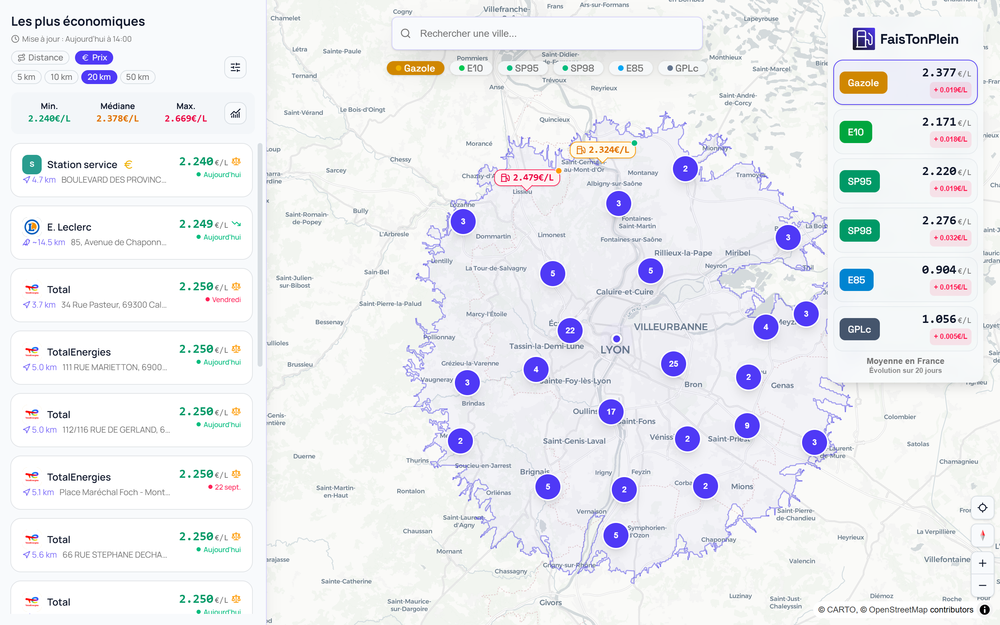
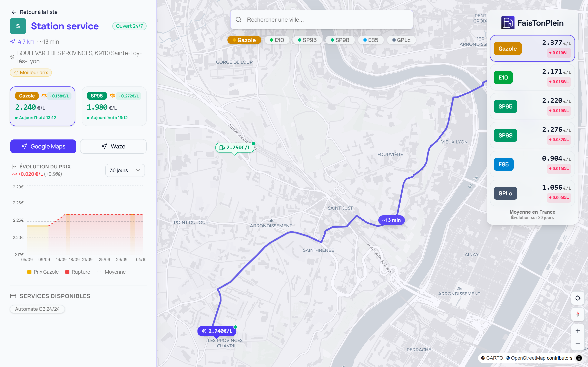

Gazole · moyenne en France
2,377 €/L
+ 0,019 € en 20 jours
Et près de
chez vous ?
faistonplein.vercel.app


Carte, liste, prix :
tout sur un seul écran.
Les moins chères,
classées pour vous.
Chaque station,
30 jours d'historique.
La moyenne nationale,
toujours sous les yeux.